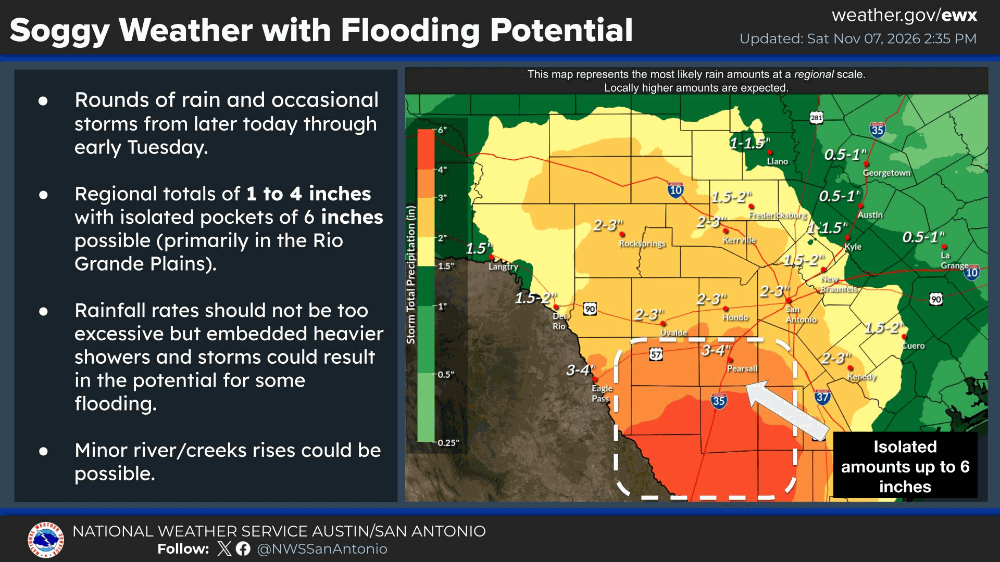

TEXAS WEATHER
South Texas Flood Watch: Up to 5 Inches Possible in Some Areas
November 7, 2026 · Texas News Studio

South Texas is preparing for a potentially disruptive weekend of heavy rain. The National Weather Service office in Corpus Christi issued a flood watch for much of South Texas from Saturday afternoon through Monday morning.
Forecasters expect widespread totals of approximately 2 to 4 inches through Monday morning, with localized amounts exceeding 5 inches possible. A few model scenarios are higher, but those are not the official expectation.
The greatest concern is where slow-moving storms repeatedly cross the same communities. Laredo, the Brush Country and the Coastal Bend are among areas where heavy rainfall could create flash flooding. The Weather Prediction Center placed much of South Texas in a Slight Risk for excessive rainfall Sunday, level 2 of 4.
Along the coast, the weather service also highlighted high rip-current risk Sunday, rough conditions for small craft and possible coastal flooding near high tide. Drivers should never attempt to cross water-covered roads. Forecasts and warnings can change rapidly.
Original TNS news summary and analysis. Source / official information. Weather forecasts are subject to change.